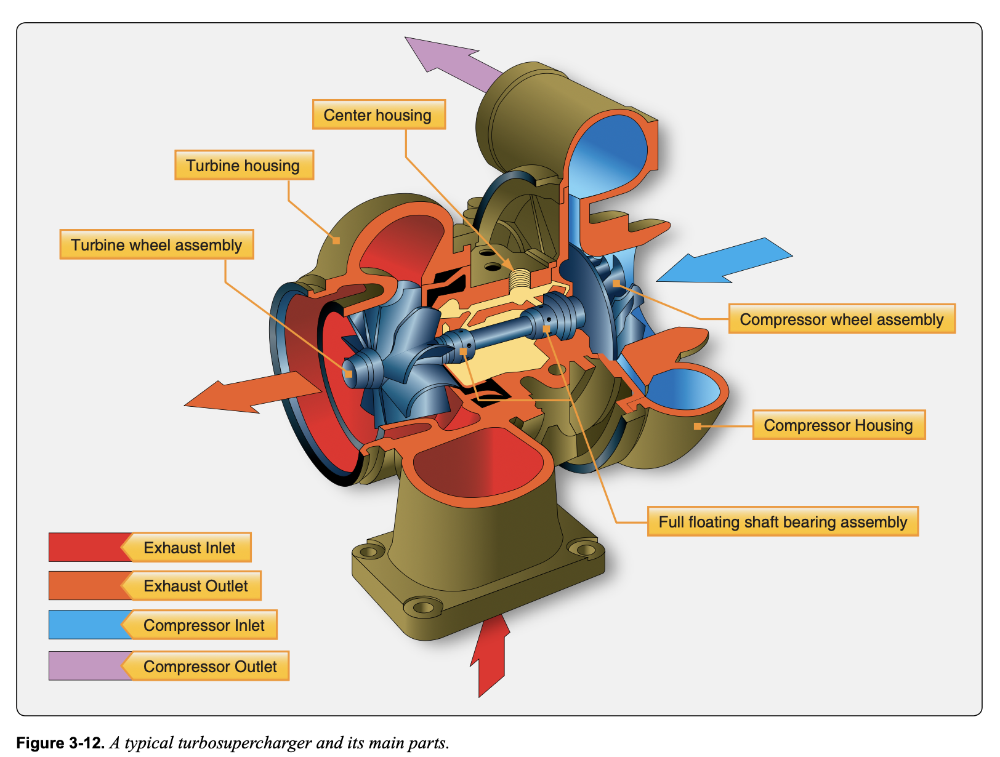
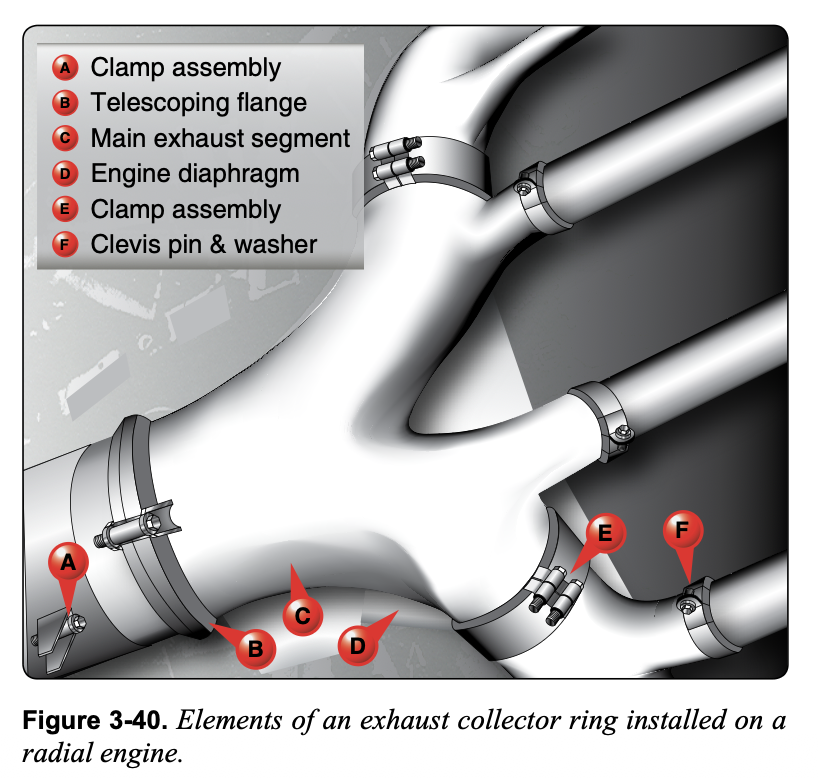

흡기계통(Induction System)은 외부 공기를 받아 여과·계량해 실린더로 보낸다.The induction system takes in outside air, filters and meters it, and delivers it to the cylinders.
구성: 에어스쿠프(Air scoop), 에어필터(Air filter), 카뷰레터/스로틀(Throttle), 흡기매니폴드(Intake manifold).Parts: air scoop, air filter, carburetor/throttle, and intake manifold.
비여과 공기를 쓰면 마모(Erosion)가 가속되므로 에어필터 관리가 중요하다.Using unfiltered air accelerates erosion, so maintaining the air filter is important.

- A. 엔진에 들어가기 전 공기 냉각.cooling the air before it enters the engine.
- B. 오일 섬프의 통로로 공연비 혼합기 순환(circulating the fuel and air mixture through passages in the oil sump).circulating the fuel and air mixture through passages in the oil sump.
- C. 기화기에 들어가기 전 연료 가열.heating the fuel before it enters the carburetor.
- A. 냉각핀 면적이 너무 많이 부러져 나감(Too much cooling fin area broken off).Too much cooling fin area broken off.
- B. 균열난 실린더 배플.A cracked cylinder baffle.
- C. 카울링 에어 씰 누설.Cowling air seal leakage.
- A. 축마력shaft horsepower.
- B. 지시마력(indicated)indicated horsepower.
- C. 제동마력brake horsepower.
- A. 마찰마력friction horsepower.
- B. 제동마력(brake)brake horsepower.
- C. 지시마력indicated horsepower.
- A. 특정 고도에서 최대마력 발휘deliver maximum horsepower at a specific altitude.
- B. 효율 요건과 낮은 중량/마력비 충족meet exacting requirements of efficiency and low weight per horsepower ratio.
- C. 부드럽게 운전하고 전 속도에서 원하는 성능 발휘run smoothly and give the desired performance at all speeds.
카뷰레터 히트(Carburetor Heat)는 배기열로 데운 공기를 흡기로 보내 기화기 결빙을 녹인다.Carburetor heat routes air warmed by exhaust heat into the induction system to melt carburetor ice.
얼터네이트 에어(Alternate Air)는 에어필터가 막혔을 때 엔진룸 내부 공기를 흡입하는 비상 경로다.Alternate air is an emergency path that draws engine-compartment air when the air filter is blocked.
히트 작동 시 공기밀도 저하로 출력이 약간 감소한다.When heat is applied, the lower air density slightly reduces power.
- A. 흡기 공기를 예열(preheat the intake air).preheat the intake air.
- B. 연료에 알코올을 섞음.mix alcohol with the fuel.
- C. 스로틀 밸브를 전기로 가열.electrically heat the throttle valve.
- A. 공기 온도 30~40°F 사이(air temperatures between 30 and 40°F).air temperatures between 30 and 40°F.
- B. 고고도.high altitudes.
- C. 낮은 엔진 온도.low engine temperatures.
- A. 매니폴드 압력·RPM 변화 없이 출력 감소.a decrease in power output with no change in manifold pressure or RPM.
- B. 일정 RPM에서 매니폴드 압력 증가.an increase in manifold pressure with a constant RPM.
- C. 일정 RPM에서 매니폴드 압력 감소(decrease in manifold pressure with a constant RPM).a decrease in manifold pressure with a constant RPM.
- A. 날개 앞전.Wing leading edge.
- B. 프로펠러 스피너 또는 돔.Propeller spinner or dome.
- C. 기화기(Carburetor).Carburetor.
과급기(Supercharger)는 흡기를 가압해 고고도에서도 출력을 유지한다 — 엔진 크랭크축으로 구동(기계식).A supercharger pressurizes the induction air to maintain power at high altitude; it is driven mechanically by the crankshaft.
내부식(Internal) 과급기는 실린더로 가는 공기를 압축한다.An internal supercharger compresses the air going to the cylinders.
고고도에서 공기밀도가 낮아지는 문제를 보상한다.It compensates for the decrease in air density at high altitude.
- A. 14.7 inHg.14.7 "Hg.
- B. 50 inHg.50 "Hg.
- C. 30 inHg.30 "Hg.
- A. 감소decrease.
- B. 비교적 일정remain relatively constant.
- C. 증가increase.
터보차저(Turbocharger)는 배기가스로 터빈을 돌려 압축기를 구동한다 — 버려지는 배기에너지를 재활용.A turbocharger uses exhaust gas to spin a turbine that drives the compressor — recovering otherwise wasted exhaust energy.
구성: 터빈휠(Turbine wheel), 압축기휠(Compressor wheel), 웨이스트게이트(Waste gate), 컨트롤러(Controller).Parts: turbine wheel, compressor wheel, waste gate, and controller.
웨이스트게이트가 배기 흐름을 우회시켜 과급압(Manifold pressure)을 조절한다.The waste gate bypasses exhaust flow to regulate the manifold pressure.

- A. 배기 바이패스 어셈블리, 압축기 어셈블리, 밀도 컨트롤러.Exhaust bypass assembly, compressor assembly, and density controller.
- B. 배기 바이패스 어셈블리, 밀도 컨트롤러, 차압 컨트롤러(Exhaust bypass assembly, density controller, and differential pressure controller).Exhaust bypass assembly, density controller, and differential pressure controller.
- C. 펌프·베어링 케이싱, 압축기 어셈블리, 밀도 컨트롤러.Pump and bearing casing, compressor assembly, and density controller.
- A. 터보차저 부스트 압력.turbocharger boost pressure.
- B. 흡기 매니폴드 압력.induction manifold pressure.
- C. 어퍼 데크 압력(upper deck pressure).upper deck pressure.
- A. 실린더로 들어오는 공기 체적 감소로 출력 감소lose power due to the reduced volume of air drawn into the cylinders.
- B. 동일 공기 체적으로 일정 출력produce constant power due to the same volume of air drawn into the cylinders.
- C. 공기밀도 감소로 출력 감소lose power due to the reduced density of the air drawn into the cylinders.
터보차저 임계고도와 제어기
Turbocharger Critical Altitude & Controllers임계고도(critical altitude)는 터보차저가 정격 매니폴드 압력을 유지할 수 있는 최대 고도다. 흡입계통이나 배기계통의 누설은 엔진이 임계고도에 도달하지 못하게 한다.Critical altitude is the highest altitude at which the turbocharger can maintain rated manifold pressure. A leak in either the induction or exhaust system prevents the engine from reaching its critical altitude.
웨이스트게이트(waste gate) 개도는 절대압력 컨트롤러(APC)가 조절하며, 부조종 부담을 줄이기 위해 압력비 컨트롤러(pressure-ratio controller)와 변화율 컨트롤러(rate-of-change controller)를 병렬로 둘 수 있다. 압력비 컨트롤러는 어퍼덱(upper-deck) 압력이 대기압의 약 2.2배를 넘지 않도록 유지하고, 변화율 컨트롤러는 스로틀 급조작 시 어퍼덱 압력이 너무 빠르게 상승하는 것을 막는다.Waste-gate position is regulated by the absolute pressure controller (APC); a pressure-ratio controller and a rate-of-change controller may be added in parallel to reduce pilot workload. The pressure-ratio controller keeps upper-deck pressure no more than about 2.2 times ambient, and the rate-of-change controller prevents upper-deck pressure from rising too fast during rapid throttle movement.

- A. 전스로틀 외 조건에서 최대 매니폴드 압력 제한.Limits the maximum manifold pressure that can be produced at other than full throttle conditions.
- B. 전스로틀에서 터보차저가 만드는 최대 매니폴드 압력 제한(Limits the maximum manifold pressure that can be produced by the turbocharger at full throttle).Limits the maximum manifold pressure that can be produced by the turbocharger at full throttle.
- C. 기화기 입구의 일정 공기 속도 유지.Maintains constant air velocity at the carburetor inlet.
- A. 전스로틀에서 터보차저 최대 매니폴드 압력 제한.Limits the maximum manifold pressure that can be produced by the turbocharger at full throttle conditions.
- B. 터보차저 압축기 토출 압력이 증가하는 속도를 제어(Controls the rate at which the turbocharger discharge pressure will increase).Controls the rate at which the turbocharger discharge pressure will increase.
- C. 임계 고도 도달 후 웨이스트 게이트 위치 제어.Controls the position of the waste gate after the aircraft has reached its critical altitude.
- A. 임계 고도 도달 후 캐빈 압력 일정 유지.Compresses the air to hold the cabin pressure constant after the aircraft has reached its critical altitude.
- B. 흡기 매니폴드의 일정 공기 속도 유지.Maintains constant air velocity in the intake manifold.
- C. 해면고도에서 임계 고도까지 매니폴드 압력을 일정하게 유지(maintain manifold pressure constant from sea level to the critical altitude of the engine).Compresses air to maintain manifold pressure constant from sea level to the critical altitude of the engine.
- A. 부분 스로틀 작동 시 부트스트래핑을 줄임(reduces bootstrapping during part-throttle operation).reduces bootstrapping during part-throttle operation.
- B. 최대 출력을 위해 웨이스트 게이트 밸브를 위치시킴.positions the waste gate valve for maximum power.
- C. 일정 연공비를 제공.provides a constant fuel-to-air ratio.
- A. 항공기가 임계 고도에 도달하지 못함(aircraft will not be able to reach its critical altitude).the aircraft will not be able to reach its critical altitude.
- B. 엔진이 오버부스트되기 쉬움.the engine is more likely to over boost.
- C. 배기가스가 터빈을 통과하지 못함.none of the exhaust gases will flow through the turbine.
- A. 매니폴드 압력에 영향 없음.have no effect on manifold pressure.
- B. 불규칙한 매니폴드 압력으로 엔진 서지 유발(cause engine surges due to an erratic manifold pressure).cause engine surges due to an erratic manifold pressure.
- C. 터보차저로 가는 오일 압력 감소 유발.cause the oil pressure to the turbocharger to decrease.
- A. 임계고도(Critical altitude)Critical altitude.
- B. 실용상승한도Service ceiling.
- C. 압력고도Pressure altitude.
결빙 유형: 충돌빙(Impact ice, 입구·필터), 연료증발빙(Fuel evaporation ice), 스로틀빙(Throttle ice).Types of icing: impact ice (inlet and filter), fuel evaporation ice, and throttle ice.
흡기 결빙은 공기흐름을 막아 출력 저하·정지를 유발한다.Induction icing blocks airflow, causing power loss or engine stoppage.
감시: 흡기압력(Manifold pressure) 게이지의 비정상 변화로 조기 식별한다.Monitoring: an abnormal change in the manifold pressure gauge gives early warning.
- A. 양·음 대전 영역으로 입자를 끌거나 밀어냄.Positive and negative charged areas to attract and/or repel particulates out of the airflow.
- B. 공기·수분 분리기로 물방울로 공기를 세척.Air/moisture separators, and “washing” the air clean utilizing water droplets.
- C. 관성·원심력을 이용한 급격한 기류 방향 전환, 필터·엔진 입구 스크린(Sharp airflow directional change to take advantage of inertia and/or centrifugal force, and filters or engine inlet screens).Sharp airflow directional change to take advantage of inertia and/or centrifugal force, and filters or engine inlet screens.
터빈 흡입구(Inlet)는 압축기에 균일·안정된 공기흐름을 공급한다 — 엔진 효율의 출발점.The turbine inlet supplies smooth, stable airflow to the compressor — the starting point of engine efficiency.
아음속기는 발산형(Divergent) 덕트, 초음속기는 가변(Variable) 흡입구로 충격파를 제어한다.Subsonic aircraft use a divergent duct; supersonic aircraft use a variable inlet to control shock waves.
FOD(이물질 흡입)·버드스트라이크 방지 설계가 중요하다.Design to prevent FOD (foreign object damage) and bird strikes is important.

- A. 고속 군용 제트기.high-speed military jets.
- B. 헬리콥터·일부 터보프롭·엔진 시험대(helicopters, some turboprop engines, and engine test stands).helicopters, some turboprop engines, and engine test stands.
- C. 고바이패스 터보팬 여객기.high-bypass turbofan airliners.
- A. 타코미터, 연료유량계, EGT.Tachometer, fuel flow indicator, and EGT.
- B. 연료유량계, EGT, EPR.Fuel flow indicator, EGT, and EPR.
- C. 타코미터, EGT, EPR(Tachometer, EGT, and EPR).Tachometer, EGT, and EPR.
- A. 엔진/입구 구역의 얼음 제거.remove ice from engine and/or inlet areas.
- B. 엔진/입구 구역의 얼음 형성 방지(prevent ice formation in engine and/or inlet areas).prevent ice formation in engine and/or inlet areas.
- C. 엔진/입구 구역의 얼음 제거 및 형성 방지 모두.remove ice from engine and/or inlet areas and prevent ice formation in engine and/or inlet areas.
- A. 1단 터빈 노즐 가이드 베인(first stage turbine nozzle guide vanes).first stage turbine nozzle guide vanes.
- B. 터빈 디스크.turbine discs.
- C. 배기 콘.exhaust cone.
- A. 대부분이 엔진 냉각에 쓰인다.Most is used for engine cooling.
- B. 대부분이 연소 지원에 쓰인다.Most is used to support combustion.
- C. 이 지점에서 일정 비율이 자주 공조·기타 공압 계통용으로 블리드된다(A small percentage is frequently bled off at this point to be used for air-conditioning and/or other pneumatic powered systems).A small percentage is frequently bled off at this point to be used for air-conditioning and/or other pneumatic powered systems.
배기계통(Exhaust System)은 연소가스를 안전하게 외부로 배출하고 소음을 줄인다.The exhaust system safely discharges combustion gases overboard and reduces noise.
구성: 배기포트, 배기매니폴드(Manifold), 머플러(Muffler), 배기파이프.Parts: exhaust ports, exhaust manifold, muffler, and exhaust pipe.
배기 누설은 일산화탄소(CO) 중독·화재 위험 — 정기 점검 필수.An exhaust leak risks carbon monoxide (CO) poisoning and fire, so regular inspection is essential.
![exhaust_recip]()
- A. 갈링.Galling.
- B. 공식(pitting).Pitting.
- C. 균열(Cracking).Cracking.
- A. 더 가볍다.are lighter.
- B. 밸브 충격을 완충한다.dampen valve impact shocks.
- C. 열을 잘 방산한다(dissipate heat well).dissipate heat well.
- A. 역추력 위치에서 클램셸이 고착.Clam shells stick in thrust reverse position.
- B. 테일 콘의 핫스폿(Hot spots on the tail cone).Hot spots on the tail cone.
- C. 배기 덕트 라이너의 변형.Warping of the exhaust duct liner.
- A. 연철에 사용한 적 없는 스틸 그릿 사용.Use steel grit which has not previously been used on soft iron.
- B. 초미세 화강암 그릿 사용.Use super fine granite grit.
- C. 철·강에 사용한 적 없는 모래 사용(Use sand which has not previously been used on iron or steel).Use sand which has not previously been used on iron or steel.
- A. 연소실을 통과하는 2차 공기로(By secondary air flowing through the combustion chamber).By secondary air flowing through the combustion chamber.
- B. 디퓨저 섹션에 절단된 구멍·루버 패턴으로.By the pattern of holes and louvers cut in the diffuser section.
- C. 엔진 공기 입구에서 빼낸 블리드 에어로.By bleed air vented from the engine air inlet.
- A. 기체 외부 테일파이프 뒤의 배기 흔적.An exhaust trail aft of the tailpipe on the airplane exterior.
- B. 변동하는 매니폴드 압력 지시.Fluctuating manifold pressure indication.
- C. 카울링·인접 부품 안쪽의 배기 그을음 흔적(Signs of exhaust soot inside cowling and on adjacent components).Signs of exhaust soot inside cowling and on adjacent components.
- A. 그대로 두고 모니터.should be left alone and monitored.
- B. 영향 부위 제거 후 한계 내 윤곽 가공으로 수리 가능(may be repaired by removing the affected area and contour filing within limits).may be repaired by removing the affected area and contour filing within limits.
- C. 스티프너 추가로 수리 가능.may be repaired by adding a stiffener.
- A. AC 43.13-1A.AC 43.13-1A.
- B. 엔진 제작사 서비스 또는 오버홀 매뉴얼(Engine manufacturer's service or overhaul manual).Engine manufacturer's service or overhaul manual.
- C. 엔진 구조 수리 매뉴얼.Engine structure repair manual.
- A. 톱으로 잘라내고 매끄럽게 가공.sawed off and filed smooth.
- B. 균열이 없으면 그대로 둠(left alone if no crack has formed).left alone if no crack has formed.
- C. 부러지지 않게 최대한 펴기.straightened out as much as possible without breaking.
- A. 0.085 농후최대출력보다 희박A mixture leaner than a rich best-power mixture of .085.
- B. 0.087 풀리치보다 농후A mixture richer than a full-rich mixture of .087.
- C. 0.060 수동희박보다 희박A mixture leaner than a manual lean mixture of .060.
배기계통의 발전과 요건
Evolution & Requirements of Exhaust Systems항공기 엔진에서 연소된 연료 열에너지의 약 절반이 배기계통을 통해 손실된다. 배기계통은 이 열을 기체 구조에 손상 없이 배출해야 한다.About half the heat energy of the fuel burned is lost through the exhaust system. The exhaust system must dispose of this heat without damaging the aircraft structure.
배기계통은 세 가지 요건을 만족해야 한다: ① 배기가스 흐름을 방해하는 배압(back pressure)이 생기지 않을 만큼 열려 있을 것, ② 뜨거운 배기밸브가 찬 공기에 직접 노출되어 휘는 것을 막을 것, ③ 엔진 배기소음을 줄일 것.The exhaust system must: (1) be open enough to avoid back pressure that impedes exhaust flow, (2) protect the hot exhaust valve from a cold-air blast that could warp it, and (3) reduce exhaust noise.
1930년대의 짧은 배기스택(short stack)은 배압은 적었지만 소음이 크고, 측면 슬립 시 찬 공기가 배기밸브를 급랭(shock-cool)시켜 휘게 했다. 베이어닛(bayonet) 스택은 좁고 긴 슬롯으로 배기가스를 빼내 배압·밸브 휨·소음을 모두 줄였다.The 1930s short stacks had low back pressure but were noisy and let cold air shock-cool and warp the exhaust valves during a side slip. Bayonet stacks vent gases through a long narrow slot, reducing back pressure, valve warpage, and noise.

- A. 어떤 움직임도 막을 만큼 단단히.tight enough to prevent any movement.
- B. 엔진 교환 시마다 분해하고 씰 교체.disassembled and the seals replaced every engine change.
- C. 약간의 움직임을 허용할 만큼 느슨하게(loose enough to permit some movement).loose enough to permit some movement.
동력회수장치 (PRT·터보컴파운드)
Power Recovery Devices (PRT)동력회수 터빈(PRT, Power Recovery Turbine)은 배기가스로 구동되는 터빈으로, 추출한 에너지를 유체 클러치(fluid coupling)를 통해 엔진 크랭크샤프트에 전달한다.A power recovery turbine (PRT) is driven by exhaust gases; the energy extracted is coupled to the engine crankshaft through a fluid clutch.
18기통 Wright R-3350 터보컴파운드 엔진은 왕복엔진 출력의 실용적 한계를 보여준다. 3개의 동력회수 터빈의 도움으로 2,800파운드 미만의 무게에서 3,700마력을 낸다. 각 속도형 2단 터빈은 6개 실린더의 배기를 받으며, 유체 커플링이 비틀림 진동이 크랭크샤프트로 전달되는 것을 막는다.The 18-cylinder Wright R-3350 turbocompound engine shows the practical power limit of a reciprocating engine: with three PRTs it develops 3,700 hp at under 2,800 lb. Each velocity-type two-stage turbine receives exhaust from six cylinders, and the fluid coupling prevents torsional vibration from reaching the crankshaft.
- A. 적절한 커플링으로 크랭크샤프트를 구동(By driving the crankshaft through suitable couplings).By driving the crankshaft through suitable couplings.
- B. 과급기를 구동해 엔진의 과급 부하를 덜어줌.By driving the supercharger, thus relieving the engine of the supercharging load.
- C. 배기가스의 잠열 에너지를 모아 가속해 추력으로 변환.By converting the latent heat energy of the exhaust gases into thrust by collecting and accelerating them.
일산화탄소(CO) 검출
Carbon Monoxide Detection배기계통은 얇은 내식강으로 만들어지고 급격히 변하는 고온과 진동을 받아 균열이 잘 생긴다. 객실 난방을 엔진 배기열로 공급하는 항공기에서 배기 부위에 균열이 생기면, 누설 가스에 포함된 일산화탄소(CO)가 탑승자를 위협한다.Exhaust components are thin corrosion-resistant steel subjected to rapidly changing high heat and vibration, so cracks form. On aircraft whose cabin heat comes from exhaust heat, a crack lets leaking gas carry carbon monoxide (CO) that endangers occupants.
일산화탄소는 헤모글로빈이 산소 대신 흡수하여 중독을 일으킨다. CO 중독은 누적적(cumulative)이어서, 약간 오염된 공기를 오래 마시는 것이 고농도를 잠깐 마시는 것만큼 위험하며, 안전한 비행 능력을 떨어뜨린다.Carbon monoxide is absorbed by hemoglobin instead of oxygen, causing poisoning. CO poisoning is cumulative — breathing slightly contaminated air for a long time is as bad as a heavy concentration briefly — and impairs the ability to fly safely.

배기계통 검사
Exhaust System Inspection배기계통 검사는 모든 100시간·연차 검사의 핵심이다. 대형 엔진의 배기 부품은 적열(red hot)될 만큼 뜨겁게 작동하므로, 연필 자국(carbon)이나 아연도금 금속 접촉으로 남은 아연(zinc) 침착이 고온에서 강철에 스며들어 균열을 유발한다. 절대 연필로 표시하지 말 것.Exhaust inspection is central to every 100-hour and annual inspection. Large-engine exhaust parts glow red hot, so a lead-pencil mark (carbon) or zinc left by contact with galvanized metal will infuse into the steel at high temperature and cause cracks. Never mark with a pencil.
누설은 균열이나 부품 정렬 불량 부위에서 깃털 모양(feather-shaped)의 옅은 회색 또는 그을음 같은 검은 줄무늬로 나타난다. 진공청소기의 배출(가압) 쪽으로 배기계통을 가압하고 의심 부위에 비눗물을 발라 거품을 확인하는 방법이 일반 검사에 쓰인다. 터보차저 엔진은 볼조인트·슬립조인트·벨로즈·열차폐를 특히 주의 깊게 본다.Leaks appear as feather-shaped streaks of dull gray or sooty black at cracks or misaligned joints. A common check pressurizes the system with the discharge side of a vacuum cleaner and applies soapy water to watch for bubbles. On turbocharged engines, pay special attention to ball joints, slip joints/bellows, and heat shields.

- A. 슬립 조인트와 플렉시블 금속 튜빙.slip joints and flexible metal tubing.
- B. 스프링 로드 볼 조인트, 슬립 조인트, 플렉시블 금속 튜빙.spring loaded ball joints, slip joints, and flexible metal tubing.
- C. 스프링 로드 볼 조인트, 슬립 조인트, 벨로우즈(spring loaded ball joints, slip joints, and bellows).spring loaded ball joints, slip joints, and bellows.
배기계통 수리
Exhaust System Repairs배기 부품은 극한의 온도·진동에서 강도를 유지하는 특수 금속으로 만들어진다. 균열이나 손상은 부품을 감항성 불량으로 만든다. 대부분의 정비는 손상 부품을 제작사 신품으로 교체하는 것이지만, 부품이 매우 비싸므로 배기계통 전문 FAA 인가 수리소가 수리·사용복귀할 수도 있다.Exhaust parts are made of special metals that retain strength under extreme heat and vibration. Cracks or damage make them unairworthy. Most maintenance is replacement with new manufacturer parts, but because parts are expensive, an FAA-certificated exhaust-specialty repair station may repair and return them to service.
클램프는 과도하게 조이면 안 된다. 누설 발견 시 클램프를 풀어 부품을 재정렬한 뒤 유격만 없앨 정도로만 조인다. 너무 조이면 부품이 가열·팽창할 때 볼트가 부러질 수 있다. 신품·수리품 장착은 정비교범에 따라 새 개스킷과 올바른 너트를 쓰고 규정 토크로 조여야 한다.Clamps must not be overtightened. When a leak is found, loosen the clamps, realign the components, and tighten only enough to remove slack — overtightening can break bolts as parts expand when heated. Install new or repaired parts per the service manual with new gaskets, correct nuts, and specified torque.
- A. 재료를 식별할 수 없어 불가능하다.is impossible because the material cannot be identified.
- B. 부품 제작사가 해야 한다.must be accomplished by the component manufacturer.
- C. 현장에서 하는 것이 권장되지 않는다(is not recommended to be accomplished in the field).is not recommended to be accomplished in the field.
- A. 알칼리로.With alkali.
- B. 탈지(degreasing)로.By degreasing.
- C. 기계적 방법으로.By mechanical means.
- A. 모재 피로.base metal fatigue.
- B. 국부 균열.localized cracks.
- C. 국부 핫스폿(local hot spots).local hot spots.
터보차저 장착 시 배기는 먼저 터빈을 구동한 뒤 배출된다.With a turbocharger, the exhaust first drives the turbine and is then discharged.
고온·고압에 견디는 내열합금(Inconel 등) 부품을 사용한다.Heat-resistant alloy parts (such as Inconel) are used to withstand the high temperature and pressure.
웨이스트게이트·바이패스 밸브로 터빈으로 가는 배기량을 조절한다.Waste gate and bypass valves regulate the amount of exhaust going to the turbine.
역추력장치(Thrust Reverser)는 착륙 시 배기·바이패스 흐름을 앞쪽으로 돌려 제동력을 만든다.A thrust reverser redirects exhaust and bypass flow forward at landing to produce braking force.
형식: 기계식 차단(Cascade/Blocker door), 공압·유압 작동.Types: mechanical blockage (cascade/blocker door), actuated pneumatically or hydraulically.
활주로 제동거리를 크게 줄여 안전에 기여한다.It greatly shortens the landing roll, contributing to safety.

애프터버너(Afterburner)는 터빈 후방 배기에 연료를 추가 연소해 추력을 크게 높인다 — 군용 전투기의 핵심.An afterburner burns extra fuel in the exhaust aft of the turbine to greatly increase thrust — central to military fighters.
가변배기노즐(Variable exhaust nozzle)로 배기 흐름을 조절한다.A variable exhaust nozzle regulates the exhaust flow.
연료소모가 매우 크므로 단시간만 사용한다.Fuel consumption is very high, so it is used only for short periods.
![afterburner]()
소음억제(Noise Suppression)는 배기 혼합을 촉진해 제트소음을 줄인다 — 셰브론(Chevron) 노즐 등.Noise suppression reduces jet noise by promoting exhaust mixing — for example with chevron nozzles.
배기규제(Emissions): 미연탄화수소·NOx·매연을 줄이는 연소설계가 의무화되고 있다.Emissions: combustion designs that reduce unburned hydrocarbons, NOx, and smoke are increasingly mandated.
환경규제 강화로 저배출 연소실 기술이 발전하고 있다.As environmental regulations tighten, low-emission combustor technology continues to advance.
왕복엔진 흡기계통 📙 Jeppesen 참고
Reciprocating Induction System흡기계통은 공기를 에어스쿠프→필터→(과급기)→계량장치→매니폴드→실린더로 보냅니다. 계량은 기화기(carburetor, 벤투리 압력강하로 연료 흡입)나 연료분사(fuel injection, 각 실린더에 직접 분사)로 합니다. 연료분사는 기화기 결빙이 없고 실린더별 분배가 균일한 장점이 있습니다. 필터는 지상에서 흡입되는 먼지를 걸러 마모를 막고, 얼터네이트 에어(alternate air)는 필터 막힘·결빙 시 여과 안 된 대체공기를 씁니다.The induction system routes air through air scoop → filter → (supercharger) → metering device → manifold → cylinders. Metering is by carburetor (drawing fuel via venturi pressure drop) or fuel injection (spraying directly at each cylinder). Injection avoids carburetor icing and distributes evenly. The filter removes ground dust to prevent wear, and alternate air supplies unfiltered backup air if the filter clogs or ices.
과급은 두 방식입니다. 슈퍼차저(supercharger)는 엔진 크랭크축이 기어로 임펠러를 돌려 흡기를 가압합니다. 터보차저(turbocharger)는 배기가스로 터빈을 돌려 가압하며, 웨이스트게이트(waste gate)가 터빈으로 가는 배기량을 조절해 부스트를 제어합니다. 기화기 결빙은 연료 증발·벤투리 압력강하로 온도가 내려가 습기가 어는 것으로, 30~40°F 외기에서 가장 심하며 카뷰레터 히트(carburetor heat)로 배기 슈라우드의 더운 공기를 넣어 녹입니다.Supercharging is of two kinds. A supercharger uses the crankshaft to gear-drive an impeller that pressurizes the intake. A turbocharger uses exhaust gas to spin a turbine, with a waste gate controlling how much exhaust reaches the turbine to set boost. Carburetor icing forms when fuel vaporization and the venturi pressure drop cool the air below freezing so moisture ices — worst at 30–40°F OAT — cleared by carburetor heat routing warm shroud air in.
- A. 배기가스가 터빈을 통과하지 않음.none of the exhaust gases are directed through the turbine.
- B. 터보차저가 OFF 위치.the turbocharger is in the OFF position.
- C. 모든 배기가스가 터빈을 통과(all the exhaust gases are directed through the turbine).all the exhaust gases are directed through the turbine.
- A. 터빈.Turbine.
- B. 웨이스트 게이트(Waste gate).Waste gate.
- C. 스로틀.Throttle.
- A. 랜딩 기어 스위치(a landing gear switch).a landing gear switch.
- B. 엔진 작동 시 항상 켜지는 연료 압력 스위치.a fuel pressure switch anytime an engine is operating.
- C. 엔진 입구 기류 센서.an engine inlet airflow sensor.
흡기 제빙·얼터네이트 에어·CAT 게이지 심화 📙 Jeppesen 정독
Induction Deicing, Alternate Air, and CAT Gauge엔진이 최대 출력을 내지 못할 때 가능한 원인 하나는 카뷰레터 히트(carburetor heat)가 의도치 않게 적용된 것으로, 잘못 조정된 카뷰레터 히트 컨트롤이 원인일 수 있습니다. 최대 출력을 내지 못하는 엔진을 트러블슈팅할 때는 다른 부품을 의심하기 전에 카뷰레터 히트 컨트롤의 위치와 리깅(rigging)을 먼저 확인해야 합니다. 참고로 부적절한 카뷰레터 히트 적용은 특히 이륙이나 고출력 작동 시 디토네이션(detonation)을 유발할 수 있습니다.When an engine fails to develop full power, one possible cause is inadvertent carburetor heat, perhaps from an improperly rigged carburetor heat control. When troubleshooting an engine not developing full power, verify the position and rigging of the carburetor heat control before assuming another component is at fault. Note that improper carburetor heat can lead to detonation, especially during takeoff or high-power operation.

흡기 결빙을 제거하는 또 다른 계통은 카뷰레터 앞쪽 기류에 제빙액(deicing fluid)을 분사하는 방식으로, 흔히 알코올을 제빙액으로 사용합니다. 전형적인 계통은 알코올 저장조, 전기 펌프, 분사 노즐, 조종석 컨트롤로 구성됩니다.Another system for removing induction icing sprays a deicing fluid into the airstream ahead of the carburetor, often using alcohol. A typical system includes an alcohol reservoir, an electric pump, a spray nozzle, and cockpit controls.
가열 공기와 제빙액은 카뷰레터·스로틀 결빙 제거에 효과적이지만, 임팩트 아이스(impact ice)가 공기 흡입구를 막으면 이를 제거하기는 어렵습니다. 이 문제를 해결하려면 대체 공기 공급(alternate air supply)이 필요합니다. 카뷰레터 엔진에서는 카뷰레터 에어박스가 주 흡입구나 카울링 내부에서 공기를 끌어오는 대체 공급을 제공합니다. 그러나 연료분사(fuel-injected) 엔진은 카뷰레터 에어박스를 쓰지 않으므로 얼터네이트 에어 도어(alternate air door)를 설치해야 합니다. 이 도어가 열리면 따뜻하고 여과되지 않은 공기가 흡기 계통으로 들어오며, 작동은 조종석에서 수동으로 또는 자동으로 제어할 수 있습니다.Heated air and deicing fluid effectively remove carburetor and throttle ice, but little can be done about impact ice blocking an air intake, so an alternate air supply is needed. On carbureted engines, a carburetor air box draws alternate air from the main intake or inside the cowling. Fuel-injected engines use no air box, so an alternate air door is installed; when opened, it lets warm, unfiltered air into the induction system, controlled manually from the cockpit or automatically.

카뷰레터에서 결빙이 형성될 수 있는 온도를 조종사에게 알리기 위해, 일부 항공기에는 카뷰레터 공기 온도 게이지(CAT gauge, Carburetor Air Temperature)가 장착됩니다. 이 계통은 램 에어 흡입 덕트의 온도 감지 벌브로 카뷰레터 입구의 공기 온도를 측정해 조종석 계기(도 단위 눈금)로 신호를 보냅니다. CAT 게이지는 결빙 형성 조건을 알리는 것 외에도 지나치게 높은 카뷰레터 공기 온도를 지시하는데, 이는 디토네이션의 시작을 나타낼 수 있습니다. 예를 들어 CAT 게이지에 최대 작동 온도를 표시하는 적색선(red line)이 있으면, 그 온도를 넘겨 작동하면 디토네이션 가능성이 커집니다.To warn a pilot when carburetor temperature can support ice formation, some aircraft have a carburetor air temperature (CAT) gauge. It measures air temperature at the carburetor entrance via a sensing bulb in the ram-air intake duct, sending a signal to a cockpit instrument calibrated in degrees. Besides indicating icing conditions, the CAT gauge shows excessively high carburetor air temperatures, which can signal the onset of detonation; if the gauge has a red line for maximum operating temperature, operating above it increases the chance of detonation.

- A. 기화기 히트 밸브 컨트롤 링키지의 잘못된 조정(Improper adjustment of carburetor heat valve control linkage).Improper adjustment of carburetor heat valve control linkage.
- B. 아이들 혼합 조정의 과도한 농후 설정.Excessively rich setting on the idle mixture adjustment.
- C. 이코노마이저 밸브가 이륙 스로틀 설정에서 닫힌 채 유지.Failure of the economizer valve to remain closed at takeoff throttle setting.
- A. 알코올 분사와 전기 가열 흡기 덕트.Alcohol spray and electrically heated induction duct.
- B. 에틸렌 글리콜 분사와 가열 흡기 공기.Ethylene glycol spray and heated induction air.
- C. 알코올 분사와 가열 흡기 공기(Alcohol spray and heated induction air).Alcohol spray and heated induction air.
- A. 이륙 시 엔진의 오버부스트 상태.an overboost condition of the engine on takeoff.
- B. 엔진 출력의 일시적 증가.a transient increase in engine power.
- C. 매니폴드 압력의 지속적 드리프트(continual drift in the manifold pressure indication).a maximum increase in manifold pressure.
- A. 연료 펌프 스위치를 끔.Turn off the fuel pump switches.
- B. 엔진 크랭킹을 계속함(Continue cranking the engine).Continue cranking the engine.
- C. 마그네토 스위치를 끔.Turn off the magneto switches.
과급 흡기 계통: 슈퍼차저의 원리와 형식 심화 📙 Jeppesen 정독
Supercharged Induction Systems and Their Types항공기가 높이 오를수록 대기 중 연소를 지원하는 산소가 줄어듭니다. 왕복엔진 항공기가 상승하면 엔진 출력이 감소하는데, 이 자연스러운 출력 손실을 제한하려면 더 많은 산소를 엔진에 공급해야 합니다. 더 많은 공기를 엔진에 공급하는 한 방법이 슈퍼차저(supercharger)입니다. 슈퍼차저는 매니폴드 압력(manifold pressure)을 높이는 엔진 구동식 공기 펌프로, 매니폴드 압력이 높을수록 연료·공기 혼합기가 조밀해져 엔진이 더 많은 출력을 낼 수 있습니다. 전형적인 슈퍼차저는 100퍼센트를 넘는 체적 효율을 내면서 매니폴드 압력을 수은주 30인치 이상으로 높일 수 있습니다.The higher an aircraft climbs, the less oxygen is available for combustion, so a reciprocating engine's power output decreases with altitude. To limit this loss, more oxygen must be supplied—one way is a supercharger, an engine-driven air pump that raises manifold pressure. Higher manifold pressure means a denser fuel/air mixture and more power. A typical supercharger can boost manifold pressure above 30 inches of mercury while producing over 100 percent volumetric efficiency.
과급 흡기 계통의 구성품은 연료 계량 장치와 흡기 매니폴드 사이에 슈퍼차저가 추가된다는 점을 빼면 자연흡기 계통과 유사합니다. 슈퍼차저는 보통 엔진 크랭크축이 기어 트레인을 통해 단일 속도, 2속도, 또는 가변 속도로 구동합니다. 슈퍼차저는 공기 압축이 일어나는 횟수에 따라 단단(single-stage), 2단(two-stage), 다단(multistage)으로 분류되며, 각 단은 압력 상승을 나타냅니다. 모든 과급 엔진에서 매니폴드 압력 게이지 센서는 슈퍼차저 뒤에 설치되어 실린더로 들어가기 전 연료·공기 혼합기의 압력을 측정하는데, 이 압력을 알면 엔진 성능을 정확히 지시할 수 있습니다.A supercharged induction system resembles a normally aspirated one except for a supercharger added between the fuel-metering device and the intake manifold. It is usually driven by the crankshaft through a gear train at one, two, or variable speeds, and is classified as single-, two-, or multistage by the number of compression events, each stage a pressure increase. On all supercharged engines, a manifold-pressure gauge sensor sits after the supercharger to measure mixture pressure before it enters the cylinders, accurately indicating engine performance.
단단·단속(single-stage, single-speed) 슈퍼차저의 초기형은 해면(sea-level) 슈퍼차저 또는 지상부스트 블로어(ground boost blower)로 불립니다. 이 형식은 기어 구동 임펠러 하나로 모든 고도에서 엔진 출력을 높이지만, 자연흡기 엔진과 마찬가지로 고도가 오르면 출력이 여전히 감소하는 단점이 있습니다. 단단·단속 슈퍼차저는 많은 성형(radial) 엔진에 쓰이며, 램 에어를 최대한 활용하도록 전방을 향한 흡입구를 씁니다. 흡입 공기는 덕트를 지나 카뷰레터에서 기류에 비례해 연료가 계량되고, 이 연료·공기 혼합기가 슈퍼차저(블로어) 임펠러로 보내져 터빈 엔진의 원심 압축기처럼 방사상으로 가속된 뒤 디퓨저를 지나며 속도가 압력 에너지로 변환되어 실린더로 공급됩니다.An early single-stage, single-speed supercharger is the sea-level supercharger or ground boost blower. Its single gear-driven impeller raises power at all altitudes, but output still falls with altitude like a normally aspirated engine. Common on radial engines, it uses a forward-facing intake for ram air: intake air passes through ducts to a carburetor that meters fuel in proportion to airflow, and the charge goes to the blower impeller, accelerated radially like a turbine's centrifugal compressor, then through a diffuser where velocity converts to pressure before reaching the cylinders.

전형적인 단단 임펠러 기어 트레인의 기어비는 약 6:1에서 12:1까지입니다. 즉 10:1 임펠러 기어비를 가진 엔진이 2,600 rpm으로 작동하면 임펠러 속도는 26,000 rpm이 됩니다. 이 고속 회전 때문에 임펠러는 고급 알루미늄 합금으로 단조해야 합니다. 일부 대형 성형 엔진(2차 대전 시기)은 단단·2속도(single-stage, two-speed) 슈퍼차저를 썼는데, 하나의 임펠러를 두 속도로 운전합니다. 저속에서는 임펠러 기어비가 약 8:1, 고속에서는 약 11:1로 올라갑니다.A typical single-stage impeller gear train ranges from about 6:1 to 12:1; an engine with a 10:1 ratio at 2,600 rpm turns the impeller at 26,000 rpm, so it must be forged from high-grade aluminum alloy. Some large radial engines (through WWII) used a single-stage, two-speed supercharger, running one impeller at two speeds—about 8:1 at low and stepped up to about 11:1 at high.


- A. 실린더 내 공기 부피 증가.volume of air in the cylinder increases.
- B. 공연비 차지 무게 감소.weight of the air-fuel charge decreases.
- C. 실린더 내 공기 밀도 증가(density of air in the cylinder increases).density of air in the cylinder increases.
- A. 스로틀 개방량과 무관하게 체적 효율이 일정.The volumetric efficiency of an engine will remain the same regardless of the amount of throttle opening.
- B. 엔진 종류와 무관하게 100% 체적 효율 초과 불가.It is impossible to exceed 100 percent volumetric efficiency of any engine regardless of the type of supercharger used.
- C. 적절한 과급기로 일부 엔진은 100% 체적 효율 초과 가능(possible to exceed 100 percent volumetric efficiency of some engines by the use of superchargers).It is possible to exceed 100 percent volumetric efficiency of some engines by the use of superchargers of the proper type.
- A. 과급기 또는 임펠러부.The supercharger or impeller section.
- B. 기화기 앞의 기류(airstream ahead of the carburetor).The airstream ahead of the carburetor.
- C. 스로틀 밸브 앞의 저압 구역.The low-pressure area ahead of the throttle valve.
- A. 여압용으로 터보차저에서 캐빈으로 흐를 수 있는 공기량 제한(limit the amount of air that can flow from the turbocharger into the cabin for pressurization).limit the amount of air that can flow from the turbocharger into the cabin for pressurization.
- B. 여압용으로 터보차저에서 캐빈으로 흐르는 공기량 증가.increase the amount of air that can flow from the turbocharger into the cabin for pressurization.
- C. 공연비 차지의 속도 증가.increase the velocity of the air-fuel charge.
- A. 가변 입구 가이드 베인(IGV) 및/또는 가변 1단 팬 블레이드.variable inlet guide vanes (IGV) and/or variable first stage fan blades.
- B. 가변 형상 입구 덕트.variable geometry inlet ducts.
- C. 엔진 앞 지면을 향해 분사하는 엔진 블리드 에어 흐름(a stream of engine bleed air blown toward the ground ahead of the engine).a stream of engine bleed air blown toward the ground ahead of the engine.
왕복엔진 배기와 정비 📙 Jeppesen 참고
Reciprocating Exhaust & Maintenance배기계통은 부식성 고온가스를 배출하므로 니켈-크롬강 등 내식·내열합금으로 만듭니다. 무과급·저출력엔 쇼트스택(short stack), 현대·터보엔 컬렉터(collector)를 씁니다 — 컬렉터는 배압을 늘려 출력을 약간 줄이지만 터보 과급이 이를 상쇄합니다. 구간은 스프링부하 볼조인트·슬립조인트로 이어 팽창을 흡수하면서 누설을 막습니다. 머플러를 감싼 스테인리스 슈라우드는 히트익스체인저로 객실난방·방빙 공기를 데우는데, 균열 시 일산화탄소(CO)가 객실로 들어갑니다.The exhaust system carries corrosive hot gases, so it's made of nickel-chromium or other corrosion/heat-resistant alloys. Non-supercharged/low-power engines use short stacks; modern and turbo engines use collectors — a collector adds back pressure (slightly reducing power) but turbo boost overcomes it. Sections join with spring-loaded ball joints and slip joints to absorb expansion without leaking. A stainless shroud around the muffler is a heat exchanger warming cabin-heat/anti-ice air, and a crack lets carbon monoxide (CO) into the cabin.
배기 정비 시 아연도금·아연도 공구를 쓰지 말고 납연필로 표시하지 않습니다 — 스테인리스가 가열되면 납·아연을 흡수해 그 부위가 약해져 균열합니다. 표시는 펠트펜·인디아잉크·프러시안블루만 씁니다. 균열이 가장 흔한 결함으로, 배기 누설은 회색·검댕 자국을 남깁니다. 내부 점검이 어려우면 탈거해 개구부를 막고 약 2 psi로 가압한 뒤 비누물로 기포 누설검사합니다. 배기부품은 현장 용접수리 대신 신품·재생품으로 교환하고, 브래스·고온 로크너트를 강철 저온너트로 대체하지 않으며 개스킷은 재사용하지 않습니다.In exhaust maintenance, never use galvanized/zinc-plated tools or mark with a lead pencil — heated stainless absorbs lead/zinc, weakening and cracking that spot; mark only with felt-tip, India ink, or Prussian blue. Cracks are the most common defect, and leaks leave gray or sooty streaks. If internal inspection is hard, remove the part, cap the openings, pressurize to ~2 psi, and check for bubble leaks with soapy water. Replace exhaust parts with new/reconditioned rather than field-welding, don't substitute steel low-temp nuts for brass/high-temp locknuts, and don't reuse gaskets.
- A. 높은 열전도율과 유연성.High heat conductivity and flexibility.
- B. 내식성과 낮은 팽창계수(Corrosion resistance and low expansion coefficient).Corrosion resistance and low expansion coefficient.
- C. 내식성과 높은 열전도율.Corrosion resistance and high heat conductivity.
- A. 정렬을 돕고 팽창을 흡수(It aids in alignment and absorbs expansion).It aids in alignment and absorbs expansion.
- B. 진동을 줄이고 냉각을 증가.It reduces vibration and increases cooling.
- C. 컬렉터 링을 한 조각으로 장착할 수 있게 함.It permits the collector ring to be installed in one piece.
- A. 황동 또는 내열 너트(Brass or heat-resistant nuts).Brass or heat-resistant nuts.
- B. 고온 섬유 자긴 너트.High-temperature fiber self-locking nuts.
- C. 고온 알루미늄 자긴 너트.High-temperature aluminum self-locking nuts.
- A. 용접부가 1/8인치 두께로 쌓여야 한다.The weld should be built up 1/8 inch.
- B. 용접부에 다공성·돌출 구슬이 보여야 한다.Porousness or projecting globules should show in the weld.
- C. 용접부가 모재로 매끄럽게 테이퍼 되어야 한다(The weld should taper off smoothly into the base metal).The weld should taper off smoothly into the base metal.
- A. 인디아 잉크.India ink.
- B. 납연필(lead pencil).lead pencil.
- C. 프러시안 블루.Prussian blue.
- A. 과도한 배기 배압(excessive exhaust back pressure).excessive exhaust back pressure.
- B. 엔진 오버스피드 문제.an engine over-speed problem.
- C. 높은 오일 소비.high oil consumption.
- A. 일산화탄소가 캐빈에 들어와 조종사·승객 무력화(Pilot/passenger incapacitation caused by carbon monoxide entering the cabin).Pilot/passenger incapacitation caused by carbon monoxide entering the cabin.
- B. 연료 소비 증가로 거친 엔진 작동.A rough-running engine with increased fuel consumption.
- C. 너무 낮은 배기 배압으로 원하는 출력 미달.Too low exhaust back pressure resulting in the desired power settings not being attained.
- A. 고도에서 마주치는 급격한 온도 변화.the drastic temperature change which is encountered at altitude.
- B. 제조 시 부적절한 용접 기법.improper welding techniques during manufacture.
- C. 배기계통이 작동하는 높은 온도(the high temperatures at which the exhaust system operates).the high temperatures at which the exhaust system operates.
터빈 배기·역추력·소음 📙 Jeppesen 참고
Turbine Exhaust, Reversers & Noise터빈 배기계통은 매우 고온이라 니켈·티타늄으로 만들고 단열블랭킷(내부 단열재+딤플 스테인리스 스킨)으로 기체를 보호합니다. 배기콘(cone)은 가스를 모아 단일 제트로 바꾸고, 배기덕트(tailpipe)는 흐름을 정렬·가속해 추력을 높입니다. 노즐은 아음속엔 수렴형(convergent), 초음속 배기속도엔 수렴-확산형(convergent-divergent)을 쓰며, 소형 조정탭('mice')으로 노즐면적을 바꿔 EGT를 트림합니다.The turbine exhaust runs very hot, so it's nickel or titanium and the airframe is shielded by an insulation blanket (insulation under a dimpled stainless skin). The exhaust cone collects gas into a single jet, and the exhaust duct (tailpipe) straightens and accelerates flow to raise thrust. Nozzles are convergent for subsonic, convergent-divergent for supersonic exhaust velocity, and small adjustable tabs ('mice') change nozzle area to trim EGT.
역추력장치(thrust reverser)는 착륙·이륙중단 시 제동·방향제어를 돕고 브레이크 마모를 줄입니다 — 기계적 차단식(클램셸, 배기류에 장애물)과 공력 차단식(캐스케이드 베인으로 전방 전향)이 있으며, 정격추력의 50%를 역방향으로 낼 수 있어야 합니다. 저속에서 작동하면 고온가스·이물 재흡입으로 압축기 실속·손상 위험이 있습니다. 소음억제는 배기류 둘레를 코러게이션으로 잘게 나눠 주파수를 높이거나 흡음재를 덕트에 대어 줄입니다.Thrust reversers aid braking and directional control on landing and rejected takeoffs and reduce brake wear — mechanical-blockage (clamshell, an obstruction in the stream) and aerodynamic-blockage (cascade vanes redirecting flow forward), and must give 50% of rated thrust in reverse. Used at low speed they risk compressor stall/damage from re-ingesting hot gas and debris. Noise is cut by corrugating the exhaust perimeter to raise frequency or lining ducts with sound-absorbing material.
터보팬·터보프롭 배기, 역추력장치 세부와 소음 억제 심화 📙 Jeppesen 정독
Turbofan/Turboprop Exhaust, Thrust Reverser Detail, and Noise Suppression엔진 압력비가 초음속 배기가스 속도를 낼 만큼 충분히 높으면 수렴확산 노즐(convergent-divergent nozzle)이 더 많은 추력을 냅니다. 이 노즐의 이점은 높은 마하수에서 가장 큰데, 엔진 배기 노즐 양단의 압력비가 더 높아지기 때문입니다. 초음속 배기 덕트의 후방부는 확대되어 있는데, 이는 초음속으로 흐르는 가스의 추가된 무게(또는 부피)를 수용해 노즐이 효율적으로 작동하도록 하기 위함입니다.When the engine pressure ratio is high enough to produce supersonic exhaust velocities, a convergent-divergent nozzle produces more thrust. Its advantage is greatest at high Mach numbers because of the higher pressure ratio across the nozzle. The rear of a supersonic exhaust duct is enlarged to accommodate the added weight or volume of gas flowing at supersonic rates, so the nozzle operates efficiently.

바이패스 엔진은 대기로 배출해야 할 두 가지 가스 흐름 — 차가운 팬 공기와 터빈에서 나오는 뜨거운 가스 — 을 가집니다. 저바이패스(low-bypass) 엔진에서는 보통 믹서(mixer) 유닛이 두 흐름을 결합해 같은 노즐로 배출합니다. 고바이패스(high-bypass) 엔진에서는 팬 공기가 뜨거운 가스와 분리되어 배출되는 것이 일반적입니다.A bypass engine has two gas streams to eject—cool fan air and hot turbine gases. In a low-bypass engine, a mixer unit typically combines the two and discharges them through the same nozzle; in a high-bypass engine, the fan air is usually discharged separately from the hot gases.
전형적인 터보프롭 배기 계통에서는 배기가스가 터빈 섹션에서 테일파이프 조립체를 지나 대기로 배출됩니다. 사용하는 배기 배열은 엔진 형식에 따라 다릅니다. 스루플로우(through-flow) 버너를 쓰는 터보프롭 엔진은 보통 가스를 엔진 뒤로 곧장 내보내 나셀 밖으로 배출하는데, 이는 뜨거운 가스의 속도에서 최대 추력을 얻습니다. 역류(reverse-flow) 연소기를 쓰는 엔진은 뜨거운 가스를 엔진 앞쪽 근처에서 배출하기도 하며, 배기 스택으로 모아 기외로 방출합니다. 이 배열은 무시할 만한 수준의 추가 추력만 제공합니다.In a typical turboprop, exhaust passes from the turbine through a tailpipe assembly to the atmosphere, with the arrangement depending on engine type. A through-flow-burner turboprop usually expels gas straight out the back and out the nacelle, extracting maximum thrust from the hot-gas velocity. A reverse-flow-combustor engine may exhaust near the front, collecting gases and venting them overboard through stacks, providing a negligible amount of added thrust.
역추력장치(thrust reverser)는 정상 착륙 시 제동·방향 제어를 돕고 브레이크 정비를 줄이며, 비상 착륙·이륙 중단 시 제동과 방향 제어를 제공하고, 파워백(power-back) 작업으로 주기 위치에서 항공기를 후진시키는 데 쓰입니다. 일부는 전기식이지만 대형 수송기 대부분은 유압 또는 공압 액추에이터를 씁니다. 조종사는 조종석 레버로 역추력장치를 제어하는데, 전형적 절차는 파워 레버를 지상 아이들로 당긴 뒤 역추력을 선택하고, 필요한 만큼 파워 레버를 전진시켜 항공기를 감속하는 것입니다. 역추력장치는 정상 조건에서 제동력의 약 20퍼센트를 제공하지만, 역방향으로 정격 추력의 50퍼센트를 낼 수 있어야 합니다. 배기가스는 보통 엔진 추력 축에 대해 비스듬한 각도로 배출되므로 최대 역추력은 항상 전진 추력보다 작습니다. 낮은 지상 속도에서 역추력장치를 작동하면 뜨거운 가스의 재흡입으로 압축기 스톨이 생기거나 미세 모래·활주로 이물질이 흡입될 수 있습니다.Thrust reversers aid braking and directional control on normal landings (reducing brake wear), provide braking and control during emergency landings and balked takeoffs, and back an aircraft out in a power-back operation. Some are electric, but most large transports use hydraulic or pneumatic actuators. The pilot controls them with a cockpit lever—typically retarding power levers to ground idle, selecting reverse, then advancing them to decelerate. Reversers give about 20 percent of braking force normally but must be capable of 50 percent of rated thrust in reverse. Because exhaust exits at an angle to the thrust axis, maximum reverse thrust is always less than forward. At low ground speeds, reversers can cause compressor stalls from reingested hot gases or ingest sand and runway debris.
대부분의 역추력장치는 기계식 차단(mechanical-blockage) 또는 공력식 차단(aerodynamic-blockage)으로 분류됩니다. 기계식 차단은 배기가스 흐름에 가동 장애물을 두어 — 배기 덕트 배출 전이나 후에 — 역원뿔, 반구, 기타 장치로 가스를 기계적으로 막아 전방으로 전향시킵니다. 형상 때문에 클램셸(clamshell) 역추력장치로도 불립니다. 공력식 차단은 가스 흐름에 얇은 에어포일이나 장애물을 두는데, 이 베인들을 흔히 캐스케이드(cascade)라 하며 탈출하는 배기가스를 전방으로 재유도해 후방 추력을 만듭니다. 혼합 배기 터보팬은 하나의 역추력장치를, 비혼합·바이패스 배기 터보팬은 흔히 콜드 스트림·핫 스트림 역추력장치를 모두 갖춥니다. 일부 고바이패스 터보팬은 대부분의 추력이 팬 배출에 있어 콜드 스트림 역추력만 쓰는데, 핫 스트림 역추력장치는 무게만 늘고 이점이 적기 때문입니다.Most reversers are mechanical-blockage or aerodynamic-blockage. Mechanical blockage places a movable obstruction in the stream—an inverted cone, half-sphere, or similar—diverting gas forward, and is called a clamshell reverser for its shape. Aerodynamic blockage uses thin airfoils (often called cascades) to redirect escaping gas forward, producing rearward thrust. Mixed-exhaust turbofans use one reverser, while unmixed/bypass turbofans often have both cold- and hot-stream reversers; some high-bypass turbofans use only cold-stream reversing because most thrust is in the fan discharge and a hot-stream reverser would add weight for little value.


주요 공항 대부분이 대도시 인근에 있어 터빈 배기 소음을 최소화할 필요가 명백합니다. 지상에서 쓰는 소음 억제기에는 장기간 지상 작동 시 엔진 후방에 배치하는 이동식 장치가 있고, 대형 공항 대부분은 블라스트 펜스(blast fence)와 지정 시운전 구역을 두며 특정 시간대로 운항을 제한합니다. 구형 터보제트 엔진은 매우 높은 수준의 여러 주파수 소음을 냅니다. 압축기는 고주파 소음을 많이 내지만 이 소음은 음원에서 멀어질수록 빠르게 감소합니다. 반면 터보제트 배기는 넓은 주파수 범위에서 매우 높은 에너지의 소음을 내며, 인간 청력에 해롭고 먼 거리에서도 들립니다. 배기 소음 해법 하나는 주름형 둘레(corrugated perimeter) 소음 억제기로, 배기 흐름을 잘게 나누어 소음 주파수를 높입니다. 저주파 소음은 상대적으로 높은 음량으로 오래 지속되므로, 소음의 주파수를 높이면 소음이 줄어드는 효과가 있습니다. 일부 구형 엔진에는 소음 배출을 줄이는 허시 키트(hush kit)를 장착할 수 있습니다. 신형 엔진은 팬 배출 공기를 배기가스와 혼합해 소음을 줄이고, 흡기·배기 덕트에 흡음재를 라이닝해 소음 수준을 낮춥니다.Because most major airports are near large cities, minimizing turbine exhaust noise is essential. Ground noise suppressors include portable devices placed behind an engine during prolonged ground runs, and most large airports use blast fences, designated run-up areas, and time-of-day restrictions. Older turbojets produce very high multi-frequency noise; the compressor makes much high-frequency sound that fades quickly with distance, but turbojet exhaust produces very high-energy noise over a wide frequency range, harmful to hearing and audible far away. One solution is a corrugated-perimeter suppressor that breaks up the flow and raises its frequency—since low-frequency noise lingers loudly, raising frequency reduces perceived noise. Some older engines accept hush kits, and newer engines blend fan air with exhaust and line inlet/exhaust ducts with sound-attenuating materials to cut noise.


- A. 벤투리.Venturi.
- B. 흡기 매니폴드.Intake manifold.
- C. 기화기 에어 스쿠프(Carburetor air scoop).Carburetor air scoop.
- A. 음압(negative).negative.
- B. 양압(positive).positive.
- C. 주변압(ambient).ambient.
- A. 윙팁 보텍스 감소.reduce wingtip vortices.
- B. 항공기 플랩의 양력 능력 증가.increase lift capability of aircraft flaps.
- C. 지면에서 낮게 장착된 포드 엔진으로 잔해를 빨아들일 수 있는 보텍스 파괴(destroy vortices that can suck debris from the ground into engines that are mounted in pods that are low to the ground).destroy vortices that can suck debris from the ground into engines that are mounted in pods that are low to the ground.
- A. 저속에서 램 에어 효과 증가.provide an increased ram air effect at low airspeeds.
- B. 입구의 공기역학적 효율 극대화(maximize the aerodynamic efficiency of the inlet).maximize the aerodynamic efficiency of the inlet.
- C. 입구의 압력 강하 증가.provide an increased pressure drop in the inlet.
- A. 배기 배압 감소.To reduce exhaust back pressure.
- B. 엔진 냉각 보조(aid in cooling the engine).To aid in cooling the engine.
- C. 배기가스 배출 보조.To assist in displacing the exhaust gases.
- A. 배기가스 압력.exhaust gas pressure.
- B. 크랭크샤프트.crankshaft.
- C. 배기가스의 속도(velocity of the exhaust gases).velocity of the exhaust gases.
- A. 비슷한 온도·더 높은 압력.similar temperatures and higher pressures.
- B. 더 높은 온도·더 높은 압력(higher temperatures and higher pressures).higher temperatures and higher pressures.
- C. 비슷한 온도·압력.similar temperatures and pressures.
- A. 역방향으로 정격 추력의 35~50%(35 and 50 percent of the rated thrust in the reverse direction).35 and 50 percent of the rated thrust in the reverse direction.
- B. 역방향으로 35~75%.35 and 75 percent of the rated thrust in the reverse direction.
- C. 역방향으로 35~65%.35 and 65 percent of the rated thrust in the reverse direction.
- A. 엔진 블리드 에어 계통(the engine bleed air system).the engine bleed air system.
- B. 탑재 유압·전기 구동 압축기.an on board hydraulic or electrical powered compressor.
- C. 고압 공기 저장조.high pressure air reservoirs.
- A. 고온 가스 재흡입, 압축기 스톨, 모래·이물질 흡입(hot gas re-ingestion, compressor stalls, and sand or other foreign object ingestion).hot gas re-ingestion, compressor stalls, and sand or other foreign object ingestion.
- B. 비정상 EGT·EPR 지시.abnormal exhaust gas temperature and engine pressure ratio indications.
- C. 엔진 진동.engine vibrations.
- A. 고바이패스 터보팬(high bypass turbofans).high bypass turbofans.
- B. 터보젯.turbojets.
- C. 애프터버너 장착 터보젯.turbojets with afterburner.
- A. 제트 배기 경로에 단단한 차단 도어를 형성.form a solid blocking door in the jet exhaust path.
- B. 배기가스를 배기 노즐 직후 앞으로 돌림.turn the exhaust gases forward just after exiting the exhaust nozzle.
- C. 배기 노즐로 빠져나가지 못하게 막힌 팬/핫 배기가스를 앞 방향으로 돌림(turn to a forward direction the fan and/or hot exhaust gases that have been blocked from exiting through the exhaust nozzle).turn to a forward direction the fan and/or hot exhaust gases that have been blocked from exiting through the exhaust nozzle.
- A. 연료압, 유압, 공압(fuel pressure, hydraulic pressure, and pneumatic pressure).fuel pressure, hydraulic pressure, and pneumatic pressure.
- B. 전기, 유압, 공압(electricity, hydraulic pressure, and pneumatic pressure).electricity, hydraulic pressure, and pneumatic pressure.
- C. 연료압과 전기.fuel pressure and electricity.
- A. 전진 능력보다 작다(less than its forward capability).less than its forward capability.
- B. 전진 능력보다 크다.greater than its forward capability.
- C. 전진 능력과 같다.equal to its forward capability.
- A. 역추력 계통은 고온을 견디고 기계적으로 튼튼하며 비교적 가볍고 신뢰성이 있어야 한다(The reverser system must be able to withstand high temperatures, be mechanically strong, relatively light in weight, and reliable).The reverser system must be able to withstand high temperatures, be mechanically strong, relatively light in weight, and reliable.
- B. 항공기의 엔진 역추력 장치들은 보통 서로 독립적으로 작동한다.Engine thrust reversers on the aircraft usually will operate independently of each other.
- C. 기계적 차단 계통 설계는 배기 노즐 후방에만 전개 위치를 허용한다.Mechanical blockage system design permits a deployment position aft of the exhaust nozzle only.
- A. 스러스트 레버를 이륙 위치까지 전진, 역추력 선택, 스러스트 레버를 지상 아이들로 후퇴.Advance thrust levers up to takeoff position as conditions require, select thrust reverse, de-select thrust reverser, retard thrust levers to ground idle.
- B. 스러스트 레버를 지상 아이들로 후퇴, 필요한 만큼 역추력 레버를 올림, 역추력 레버를 지상 아이들로 후퇴(Retard thrust levers to ground idle, raise thrust reverser levers as required, and retard thrust reverser levers to ground idle).Retard thrust levers to ground idle, raise thrust reverser levers as required, and retard thrust reverser levers to ground idle.
- C. 역추력 선택, 스러스트 레버를 N1의 75% 이하로 전진, 역추력 레버를 정상 택시 속도쯤의 아이들로 후퇴.Select thrust reverse, advance thrust reverser levers no higher than 75 percent of N1, and retard thrust reverser levers to idle at approximately normal taxi speed.
🗣 ASA 구술시험 (Oral Exam) Typical Oral Questions
📝 ACS 객관식 퀴즈 ACS Multiple-Choice Quiz
배기 스택·덕트·검사 상세
Exhaust Stacks, Ducts & Inspection Detail📗 ASA Powerplant 보강연료 열에너지의 약 50%가 배기로 손실됩니다. 배기계통은 배압(back pressure)을 최소화하면서, 찬 공기가 뜨거운 배기밸브에 직접 닿아 휘는 것(warp)을 막고 소음을 줄여야 합니다.About 50% of fuel heat is lost through exhaust. The system must minimize back pressure while protecting hot exhaust valves from cold-air warping and reducing noise.
배기 스택 발전 — 1930년대 숏 스택(short stack)은 배압은 낮췄으나 소음·밸브 휨 문제. 베이어닛(bayonet, 핀치슬롯) 스택은 긴 슬릿으로 배기하며, 위를 흐르는 공기가 저압을 만들어 배출을 돕고 찬 공기의 밸브 접촉을 막아 휨과 소음을 줄였습니다. 방사형 엔진은 컬렉터 링(collector ring)으로 전 실린더 배기를 모아 테일파이프로 배출합니다.Short stacks (1930s) cut back pressure but caused noise and valve warping. Bayonet (pinched-slot) stacks vent through a long slot; airflow creates low pressure aiding exit and preventing valve warp. Radial engines use a collector ring.
가열 덕트 3종 — CAT(흑색 네오프렌, 찬공기용, −65°F~300°F), SCAT(적색 실리콘, 더운공기용, ~450°F), SCEET(2겹, ~500°F). 카뷰레터·객실 히트는 머플러 슈라우드에서 열을 얻어 SCAT으로 히트박스에 전달됩니다.Ducting: CAT (black neoprene, cold air, −65°F–300°F), SCAT (red silicone, hot air, ~450°F), SCEET (two-ply, ~500°F). Carburetor/cabin heat draws from a muffler shroud via SCAT.
검사 주의 — 100시간·연차 검사 시 슈라우드를 벗기고 전 계통 점검. 연필(탄소)·아연도금 금속 접촉 금지 — 고온에서 강에 침투해 균열 유발. 누설은 깃털모양 회색·검댕 줄무늬로 나타남. 클램프는 과조임 금지(팽창 시 볼트 파단). 진공청소기 배출측으로 가압 후 비눗물로 기포 확인. CO는 무색·무취·무미이며 헤모글로빈이 산소보다 CO를 더 잘 흡수 — 누적 중독되므로 CO 검출기 필수.Inspection: remove shrouds; NO lead pencil or galvanized contact (infuses into steel, cracks). Leaks show as gray/sooty feather streaks. Don't overtighten clamps. Pressure-check with a vacuum cleaner + soapy water. CO is colorless/odorless; hemoglobin absorbs it preferentially—use CO detectors.
📄 원문: ASA AMT Powerplant, Ch.6 Exhaust Systems, p.247–256Source: ASA AMT Powerplant, pp.247–256
- A. 균열 탐지를 위해 X선 촬영.X-rayed to detect any cracks.
- B. 수압 시험.Hydrostatically tested.
- C. 히터 에어 슈라우드를 제거하고(With the heater air shroud removed).With the heater air shroud removed.
- A. 이탈한 머플러 배플이 머플러 출구를 막지 못하게 함(To prevent dislodged muffler baffles from obstructing the muffler outlet).To prevent dislodged muffler baffles from obstructing the muffler outlet.
- B. 스파크 배출 감소.To reduce spark exit.
- C. 인접 부품을 과열로부터 차폐.To shield adjacent components from excessive heat.
FAA 핸드북 전체 도면
FAA Handbook FiguresNo FAA Handbook figures for this chapter, or not yet uploaded.